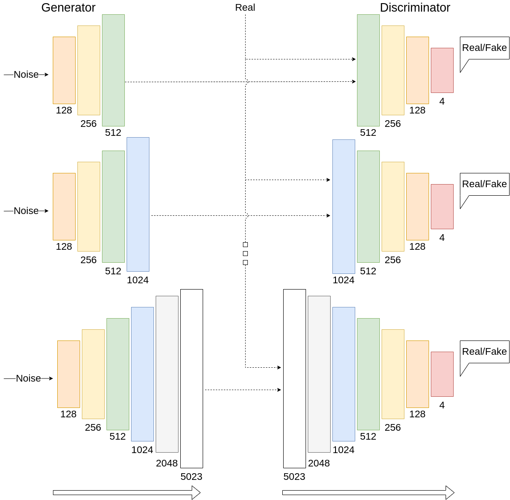

3D Progressive GAN (3D-ProGAN)
Introduction
What sets progressive GANs apart from other types of GANs is their training process. Which involves progressively adding layers to both the discriminator and generator in order to increase the resolution of the output produced. The 3D-ProGAN was introduced to see if a progressive GAN would have similar success as it did with 2D face generation, with 3D face generation. The main aim being around whether a progressive GAN is able to generate high-fidelity 3D faces.
3D-ProGAN's Design
The 3D-ProGAN is an extension to the Simple DC-GAN which was implemented by Liam Watson. The Simple DC-GAN works on 3D point-cloud data through 1D convolutional layers, where instead of the 3 channels representing an image’s RGB, it represents its 3D coordinates. The main modification to the Simple DC-GAN was the implementation of progressive training. This meant cutting down the number of hidden layers to ensure the output starts at a low resolution, in this case, 512 vertices. In theory, the idea was then to double the vertices on each addition of a new layer until it reached 5023 vertices, the number of vertices per face in the preprocessed data. In order to ensure the dynamic addition of layers did not produce undesirable results, mechanisms were used between layers to ensure smooth progressive growth such as skip connections and interpolation.
Results
In order to test how well our generators were able to generate 3D faces, a set of metrics was used to calculate the quantitative results. These metrics were chosen based on what was widely used in the field of 3D face generation. Most of the inspiration for these choices came from MeshGAN and CoMA, both of which are considered state-of-the-art techniques. The metrics chosen include: Generalisation, Specificity, Frechet Inception Distance(FID) and Kernel Inception Distance(KID). Generalisation and Specificity use a type of Euclidean distance to calculate their values, while FID and KID are flattened into 2D images which are then used on a pre-trained Inception Network.
| Generalisation(mm) | Specificity(mm) | FID | KID | |
|---|---|---|---|---|
| Simple-DCGAN | 0.754 ± 0.137 | 0.651 ± 166 | 36.34 | 0.12 |
| 3D-ProGAN(0) | 12.195 ± 0.190 | 11.619 ± 0.327 | 57.52 | 0.29 |
| 3D-ProGAN(1) | 11.773 ± 0.167 | 11.427 ± 0.219 | 47.28 | 0.19 |
| Generalisation(mm) | Specificity(mm) | FID | |
|---|---|---|---|
| CoMA | 0.606 ± 0.203 | 1.899 ± 0.272 | 22.43 |
| MeshGAN | 0.605 ± 0.264 | 1.536 ± 0.153 | 13.59 |
| Simple-DCGAN | 0.754 ± 0.137 | 0.651 ± 0.166 | 36.34 |
| 3D-ProGAN(1) | 11.773 ± 0.167 | 11.427 ± 0.219 | 47.28 |
3D faces require more than just quantitative results for validation. Below is a qualitative view of the generated faces by 3D-ProGAN using mesh reconstruction from the generated 3D point-clouds.
Conclusion
Looking at the quantitative results we are able to see that 3D-ProGAN lacks especially in terms of Generalisation and Specificity, which is likely due to being undertrained, it is still able to produce relatively good results for both FID and KID. A key take away from the quantitative results is that adding a progressive improves the results across all of the metrics. This observation is backed up by the qualitative results as there is a clear improvement from adding a progressive layer. This being said, 3D-ProGAN was not able to generate high-fidelity 3D faces.